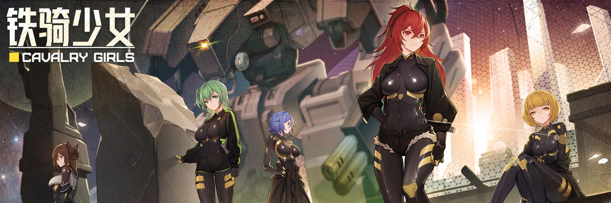

01. 项目概述

铁骑少女 是一款披着 二次元美少女 外皮的 硬核机战 游戏, 也许有的人对二次元美少女并不感兴趣, 但实际上如果把她们换成兜甲儿或流龙马, 你将发现其实也没太大区别, 当然如果你本来就喜好这口, Than Even Better, 性格各异的角色, 类别丰富的装备, 残酷可怕的敌人, 瞬息万变的战场, 种种元素的叠加, 产生了令人欲罢不能的魔力, 总想再坚守一天就睡了, 结果转眼窗外就迎来了黎明.
在机缘巧合之下, XJ 接触到了这款游戏, 从最初的不屑, 到事后的沉迷(逍遥津战神附体: 没有敌人能够越过我大炮的范围, 因年轻而犯下的错: 敢教夏亚和阿姆罗什么叫王牌机师), 足见它确实具有独到之处, 一开始这个项目源于 XJ 想整理一份武器列表, 但出于对游戏的喜爱和支持, 最终决定实现更多功能, 将数据整合成百科网站, 方便其他玩家查询信息, 并传递游戏能给大家带来的那份欢乐(＾_＾).
本站内容基于游戏V1.2.X, 对游戏有意见或看法, 可加群讨论或者去官方文档反馈.
一群: 636404554
二群: 153927029
特殊: 486296202(主要讨论模组技术问题)
外语区在线 Discord: https://discord.com/invite/4kzUDG2rTZ
官方建议文档的地址: https://docs.qq.com/sheet/DUE1RaVJQZ0lsZWZn?tab=BB08J2/
02. 备注信息
01. 当前网站源码地址: https://github.com/xjwiki/cavalryGirls;
02. 游戏相关的图像和音乐版权, 均属于铁骑少女游戏开发团队既中子星游戏研究所;
03. 本站使用 创意共享 4.0 协议, 不贴原地址的偷盗, 高斯狙击步枪会把你轰杀至渣呀! ﾟдﾟ)_6;
04. XJ 只是个普通玩家, 跟游戏开发团队没有任何关系, 本人并不代表游戏开发团队, 做这项目只是出自热爱;
05. 可到 GitHub 提 Issue, 对游戏有疑问或发现内容有什么不对, 也可在 Q 群中反馈(但 Q 群 XJ 未必会看到你的信息);
06. 感谢铁骑少女的游戏开发团队, 给我们带来了这出乎意料的二次元硬核游戏, 独立团队开发游戏并不容易, 希望他们能够走得更远;
03. 参考引用
腾讯文档 > 游戏官方 : 铁骑少女mod制作索引中心
百度贴吧 > 路边的酱油仔 : 一些好用的武器推荐
BiliBili > 一首FTL送给在座各位 : 《铁骑少女》心得
Steam > Onecu_cu : 好感机制详解[含数值]
Steam > Tangible : Beginner's Guide to Cavalry Girls
BiliBili > 吴鸽有理解 : 麻雀虽小, 还真挺好玩的!《铁骑少女》Steam 游戏测评!
BiliBili > 独立游戏蜥蜴君 : 终于等到你! 因涩涩卡审核跳票三个月的铁骑少女!【铁骑少女测评】
BiliBili > 木瓜椰奶冻丶 : 成分极其复杂! 这是我见过最变态的美少女机甲肉鸽游戏! 《铁骑少女》到底好不好玩?
Licence: CC BY-NC-SA 4.0 DEED
Copyright © 2024- XJ.Chen | V0.1.3